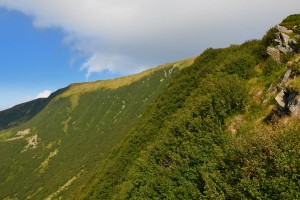
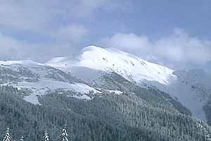

Полони́на Боржа́ва — гірський масив на Полонинському хребті в Українських Карпатах, між річками Віча і Рікою. Довжина масиву близько 50 км, пересічна ширина 3—4 км (місцями до 10 км і більше), висота до 1681 м (г. Стій). Боржава є найдовшою полониною Закарпаття.
До полонини Боржава примикає полонина Кук (1361 м), яку часто розглядають як подовження Боржави. До Боржави також відносять хребет Палений Грунь.
Хребет починається біля смт Міжгір'я масивом гори Кук (за іншими даними — хребтом Палений Грунь), далі через перевал Присліп (938 м) і гору Ополонок (1171 м) тягнеться на північний захід з поступовим набором висоти. Від гори Великий Верх (1598 м) у тому ж напрямку (на Воловець) висоти зменшуються — Плай (1350 м), Темнатик (1344 м), а на південний захід збільшуються до гори Стій (1681 м), далі хребет дуже різко обривається. На південних схилах хребта бере свій початок річка Боржава, що прорізує широку долину у Вулканічному хребті та впадає в Тису. На півночі та північному сході Полонина Боржава межує із Воловецько-Міжгірською верховиною.
Сховати карту району
Маршрут #8 хр. Свидовець

гірський масив в Українських Карпатах, на Закарпатті. Розташований між річками Тересвою (на заході) та Чорною Тисою (на сході). Найбільш піднятою частиною ландшафту Свидовець є головний Свидовецький хребет, який має вигляд опуклої на північний схід гірської дуги, що проходить через такі вершини: Кінець (1308 м) — Темпа (1639 м) — Велика Куртяска (1626 м) — Унгаряска (1707 м) — Татуляска (1774 м) — Стіг (1704 м) — Близниця (1883 м). З головного хребта у південному напрямку відходять кілька відрогів, названих плайками. На північ від головного хребта відходять два великі відгалуження: від Трояски — хребет з вершиною Татарука (1711 м), від Крутяски Малої — довгий хребет з вершинами Підпула (1634 м), Берляска (1555 м), Черепан (1532 м) та Свидова (1430 м).
Сховати карту району
Маршрут #9 г.Піп Іван Мармароський

Піп Іва́н Мармаро́ський — гора в Українських Карпатах, одна з вершин Гуцульських Альп (частина Мармароського гірського масиву). Розташована в Рахівському районі Закарпатської області, на кордоні України і Румунії.
Висота 1936 м. Форма вершини пірамідальна, північні та східні схили круті. Довкола гори сезонно можуть утворюватись невеликі озерця. На значних площах тут є полонини. Найближча полонина - Лисича. Росте багато рідкісних рослин. Гора розташована в межах Марамороського заповідного масиву Карпатського біосферного заповідника.
Піп Іван з прилеглими вершинами (Жербан, Берлебашка тощо) та високогірними полонинами виділяють в окремий масив, який назвивається Гори Піп-Іван.
Найближчий населений пункт: с. Ділове.